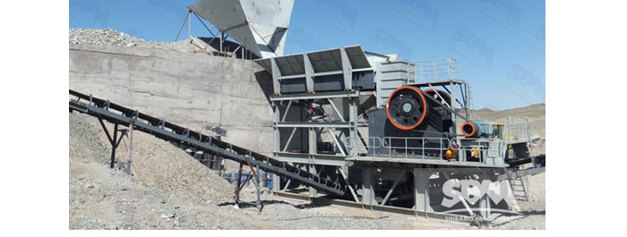
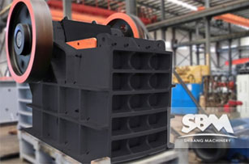

Jaw Crusher
- Type:Crusher Machine
- Model:Jaw Crusher
- Trademark:SBM
- Certificate:ISO9001: 2000
- Origin:China
- Capacity:50-800TPH
Jaw crusher Widely Application
With the development of mineral resource exploitation and utilization, nonferrous metal, chemical industry, ferrous metallurgy, light industry and other mineral resources increasingly depleted, a substantial increase in mining, building materials, road construction industry for crushing material also increases rapidly, which makes crusher machine more and more important.
Jaw crusher is the emergence earlier crushing equipment, because of its simple structure, strong, reliable work, easy to maintain and repair and production and construction costs less, therefore, until now is still widely used in metallurgy, chemical industry, building materials, electric power, transportation and other industrial sectors, compressive strength at 147-245MPa for various ores and rocks of coarse, medium, fine.
- 1.This series of crusher is mainly used for hard ores and rocks of metallurgy, mining, chemical, cement, construction, refractory materials and ceramic industries are broken and in various kinds of finely.
- 2.It is suitable for crushing the compressive strength less than 300MPaall kinds of soft and hard ore, the crushed materials shall not be greater than the maximum block size required technical parameter table.
- 3.It is widely used in mining, smelting, building materials, highway, railway, water conservancy and chemical industry and many other departments, various materials with crushing compressive strength less than 320 MPa.
Excellent Performance HJ Jaw Crusher
In recent years, SBM in order to meet the metallurgy, mine, construction and other industrial sectors broken high strength, specially developed new jaw crusher. Our company's jaw crusher is divided into three series, respectively is: PE, PEW, HJ. Among them ,HJ series is a kind of new type jaw crusher.
HJ series high effeient jaw crusher is my company in the foundation of introducing, absorbing domestic and foreign advanced technology, according to the actual needs of the customer site, R & D design concept of high input, high output based on a set of low energy consumption, high production capacity, in one of the modern high performance crusher.
The practice proves that the HJ series jaw crusher to the quality of its excellent performance, reliable and cost-effective to win global customer trust, is the traditional jaw crusher ideal upgrade replacement product. HJ series high jaw crusher used in building gravel, mechanism of sand production process, especially the hard material crushing basalt, compared with the traditional jaw crusher with high production efficiency, low operation cost.
Jaw Crusher Structure
Jaw crusher structure is mainly include frame, eccentric shaft rotation part, the crushing cavity working part, insurance device, discharge port adjusting device.
- 1.Frame part: composed of side plates, front box after box assembly, welding pieces etc..
- 2.The eccentric shaft rotation part: is mainly composed of a movable jaw, eccentric shaft, bearing, a bearing seat, a belt wheel etc.. Is the main part of power transmission.
- 3.The crushing cavity working part: is mainly composed of a fixed jaw plate, a movable jaw plate, side plate, support plate and other components, is crushing material work parts.
- 4.Insurance device: by the toggle plate, elbow board seat, spring, spring pull rod, is crusher insurance function under abnormal conditions of parts.
- 5.Discharge port adjusting device: it is used to adjust the size of the discharging port size, control of the particle size. Mainly by adjusting the fixed inclined block, adjust the sliding inclined block, the top thread bolts, slide the locking rod etc..
Technical Data
Model |
Feed Opening (mm) |
Max Feeding (mm) |
Discharge Opening (mm) |
Capacity(t/h) |
Power (kW) |
Machine Size(mm) |
HJ98 |
650×980 |
560 |
75-175 |
110-350 |
90-110 |
2470×2000×2180 |
HJ110 |
800×1100 |
660 |
100-200 |
215-510 |
110-132 |
2875×2472×2530 |
HJ125 |
950×1250 |
800 |
125-225 |
280-650 |
132-160 |
3320×2600×3120 |
| Model | Feed Opening (mm) | Max Feeding (mm) | Discharge Opening (mm) | Capacity (t/h) | REV (r/min) | Power (kw) | Motor Model | Machine Size (mm) |
| PE200×350 | 200×350 | 170 | 20-50 | 2-6 | 220 | 6-7.5 | Y160M-6/7.5 | |
| PE250×400 | 250×400 | 210 | 20-60 | 5-20 | 310 | 6-15 | Y180L-6/15 | 1450×1315×1296 |
| PE250×750 | 250×750 | 210 | 20-60 | 8-22 | 320 | 6-30 | Y225M-6/30 | |
| PE500×750 | 500×750 | 425 | 50-100 | 45-100 | 275 | 6-55 | Y280M-6/55 | 1890×1916×1870 |
| PE600×900 | 600×900 | 500 | 65-160 | 70-120 | 250 | 6-75 | Y315S-6/75 | 2520×1840×2303 |
| PE750×1060 | 750×1060 | 630 | 80-140 | 130-260 | 250 | 8-90 | Y315L1-8/90 | 2620×2302×3110 |
| PE900×1200 | 900×1200 | 750 | 95-165 | 220-380 | 200 | 8-130 | JR127-8/130 | 3789×2826×3025 |
| PE1000×1200 | 1000×1200 | 850 | 195-265 | 230-380 | 200 | 8-130 | JR127-8/130 | 3889×2826×3025 |
| PE1200×1500 | 1200×1500 | 1020 | 150-300 | 400-800 | 220 | 8-200 | YR355M4-8/200 | 4930×3150×3700 |
| Model | Feed Opening (mm) | Max Feeding (mm) | Discharge Opening (mm) | Capacity (t/h) | REV (r/min) | Power (kw) | Motor Model | Machine Size (mm) |
| PEW250×1000 | 250×1000 | 220 | 20-40 | 15-50 | 330 | 6-37 | Y250M-6/37 | 1400×1850×1310 |
| PEW250×1200 | 250×1200 | 220 | 20-40 | 20-50 | 330 | 6-37 | Y250M-6/37 | 1400×2050×1310 |
| PEW400×600 | 400×600 | 350 | 35-85 | 15-70 | 250 | 6-37 | Y250M-6/37 | 1920×1460×1840 |
| PEW760 | 760×1100 | 620 | 75-200 | 150-350 | 270 | 6-110 | Y315L1-6/110 | 2600×2500×2200 |
| PEW860 | 860×1100 | 720 | 100-225 | 200-500 | 240 | 6-132 | Y315L2-6/132 | 3300×2320×3120 |
| PEW1100 | 1100×1200 | 930 | 150-275 | 300-650 | 210 | 8-185 | Y355L1-8/185 | 4140×2660×3560 |
Get Price And Support
Simply complete the form below, click submit, you will get the price list and a SBM representative will contact you within one business day. Please also feel free to contact us by email or phone. ( * Denotes a required field).